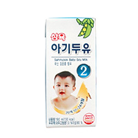
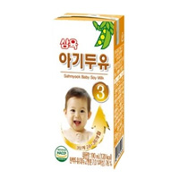
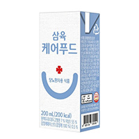
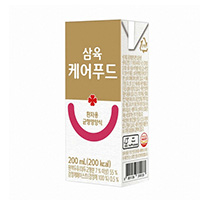

home>제품소개>특수용도식
특수용도식
- 삼육 아기두유2
190ml
- 삼육 아기두유2
- 사랑하는 내 아이의 현재의 건강뿐아니라, 건강한 성인이 될 수 있도록 기초건강을 구축하는데 있어서 꼭 필요한 기본 영양소들을, 모자람 없도록 알차게 조성한 식물성 "콩" 유아식 제품입니다.
- 삼육 아기두유3
190ml
- 아기두유3
- 24개월~36개월
꼼꼼히 설계하고 깐깐하게 개발한 삼육 아기두유 시리즈
- 케어푸드 당뇨환자용
190ml
- 케어푸드 당뇨환자용
- 당뇨환자 혹은 고혈당 환자 등에게 영양소를 균형 있게 제공할 수 있도록 영양성분을 조정하여 개발되어 식사 전부 또는 일부를 대신할 수 있는 제품입니다.
- 케어푸드 환자용
190ml
- 케어푸드 환자용
- 한국인 1일 영양성분 기준치에 충실, 환자식에 필요한 영양성분을 조정하여 개발되오 식사대용 또는 간식으로도 사용할 수 있는 제품입니다